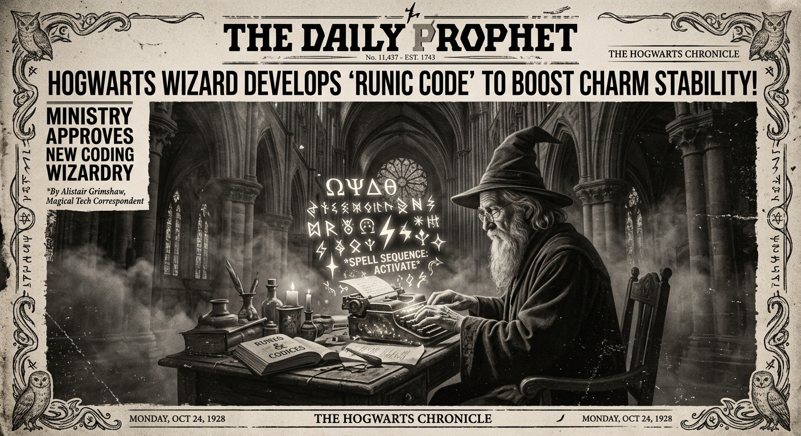

Morning Edition
6:00 AM CSTWorld & Markets
Xi Jinping Tells Russia: Trust and Support Each Other
Chinese President Xi Jinping assured Moscow of friendship on Wednesday, saying China and Russia must deepen cooperation and defend each other's interests—even as Beijing expands ties with other neighbors and nations.
— Source: Reuters, April 15, 2026North Korea Makes "Very Serious" Nuclear Advances
IAEA chief Rafael Grossi warned that North Korea has likely added a new uranium enrichment facility and stepped up activity at a key complex, marking significant progress in its ability to produce nuclear weapons.
— Source: Reuters, April 15, 2026Finance & Crypto
IMF Warns Global Debt Could Hit 100% of World GDP by 2029
The IMF's latest warning on surging public debt has reignited interest in Bitcoin as a macro hedge. Global debt could reach approximately 100% of world GDP within three years—a massive long-term signal for digital assets.
— Source: CoinDesk, April 15, 2026eToro Acquires Crypto Wallet Zengo for $70M
Retail trading platform eToro is acquiring crypto wallet startup Zengo in a $70 million deal, tying advanced self-custody technology into its growing crypto trading ecosystem.
— Source: CoinDesk, April 15, 2026
The Wednesday Wizard: Debugging Realities Since Dawn.
"Sagittarius, Wednesday arrives like a pull request you forgot you submitted—surprisingly ready to merge. The Moon in Aries fires up your ambition, and for a Rat-born Archer, that means your natural resourcefulness is dialed to eleven. Don't overthink the architecture today; ship the MVP and iterate. The cosmos rewards velocity over perfection. Your energy is contagious—use it to rally your team, your project, your vision."— Wednesday's Developer Chronicle
Sagittarius Horoscope
Happy Wednesday, Archer! The Aries Moon lights a fire under your boldest ideas today. You're not just thinking big—you're ready to execute. Midweek momentum is real: lean into it. For a Rat-born Sagittarius, this is your power combo—Rat ingenuity plus Sagittarius ambition equals unstoppable problem-solving. In code: don't get stuck in analysis paralysis. Pick the best path, commit, and refactor later. A conversation midday could unlock something you've been stuck on. Lucky numbers: 3, 15, 27. Lucky color: Electric Violet. ⚡
— Source: Horoscope.com, April 15, 2026Tech & AI Highlights
-
Snowflake Pivots from Data Warehouse to AI Agents
Snowflake is betting the future of AI isn't analyzing data—it's acting on it. The shift is away from chatbots and toward autonomous agents that can execute tasks end-to-end.
-
Ex-Solana Exec Builds Wall Street-Grade Fiber Network for DeFi
DoubleZero's private fiber network aims to eliminate latency advantages in decentralized finance, leveling the playing field—but exchanges have yet to show interest.
-
Bitcoin Developers Race to Build Quantum Defenses
A new proposal on Bitcoin's official repository calls for freezing vulnerable coins to protect against quantum computing threats—but the cost to holders could be significant.
-
Pro-Russian Cyber Group Targeted Swedish Power Plant
Sweden's government disclosed that a pro-Russian cyber group attempted to disrupt operations at a thermal power plant last year, warning that hybrid attacks are escalating.
Markets Snapshot
- S&P 500: 6,967 (+1.18%)
- Nasdaq: 23,639 (+1.96%)
- Dow: 48,536 (+0.66%)
- Gold: $4,798 (+0.56%)
- Brent Crude: $95.95 (+1.22%)
- EUR/USD: 1.1780
Active Reminders
- Build Oomi iOS and Android app
- Plaid Integration Research
- Connect Nemu to Notion
- Research VPN/proxy services
- Create security OpenClaw bot